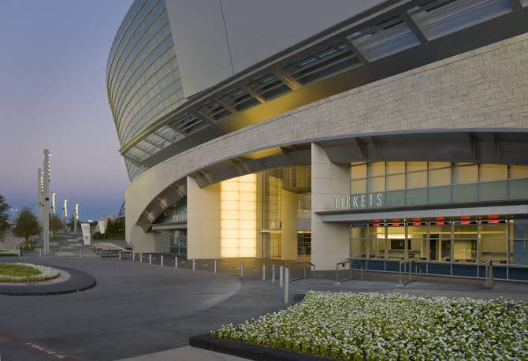
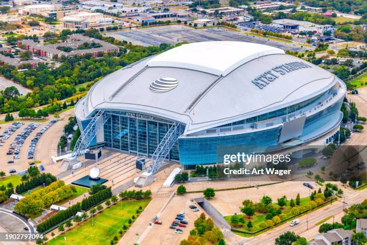
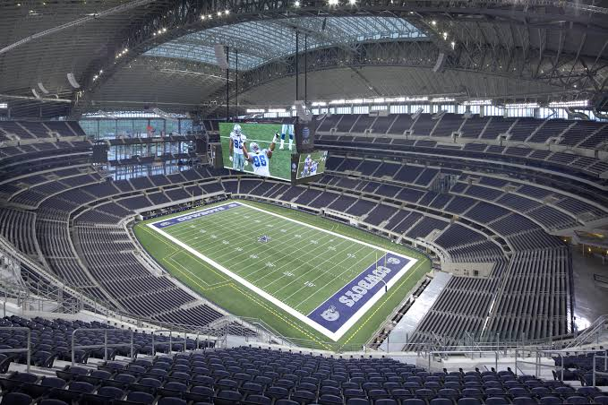

AT&T Stadium



Dallas-area matches will take place at AT&T Stadium in Arlington, one of the country's biggest and most recognizable sports venues.
The stadium is famous for its size, modern design, and ability to stage major international events with large crowds.
Its scale makes it one of the standout U.S. venues for the World Cup.